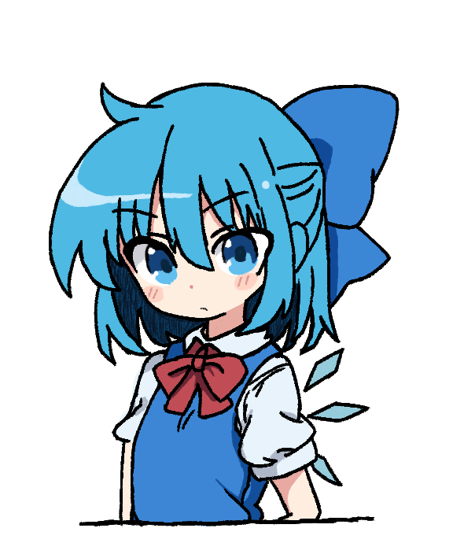

Discover the magic and charm of Gensokyo's beloved ice fairy
Cirno, the ice fairy from Touhou Project, is a beloved character known for her playful antics and incredible ice powers. Explore her world, learn about her abilities, and join her on adventures!
Learn MoreCirno is an ice fairy living in the land of Gensokyo. Despite her childish appearance, she possesses powerful ice-based abilities, making her a force to be reckoned with.
Cirno is known for her mischievous and playful personality. She often gets into trouble but always manages to find her way out with her quick thinking and ice powers.
Cirno has various relationships with other characters in Gensokyo. She is often seen interacting with characters like Reimu Hakurei, Marisa Kirisame, and Letty Whiterock.
Follow Cirno as she explores the magical world of Gensokyo, meeting new friends and facing exciting challenges along the way. Join her on her quest for fun and adventure!